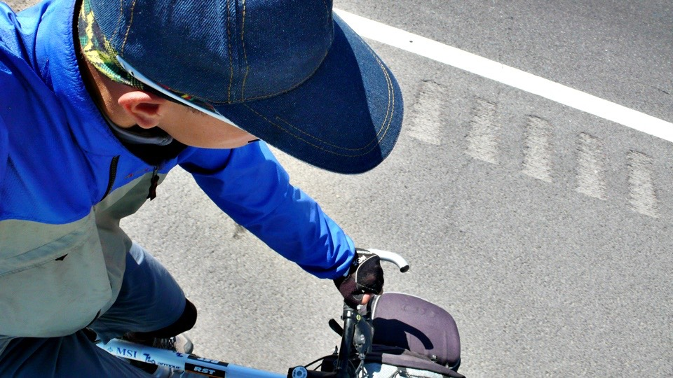

Two months after leaving Beijing I arrive at the border of China and Kazakhstan.
Thanks to Mr. Ronhua Hu's advice, I didn't make my schedule too tight,
so I had time to enjoy the sights and scenery on the way,and this also helped me get the rest I really needed.
Arriving at the border ends the China part of my journey.
The odometer shows that I've gone 5704.57 km, that's 300 km more then I had expected.
But after adding the distance that I wandered out of the way and strolled out of way and the waging around on the way, I guess that's about right.
Riding 5000 Kilometers in two months broke my previous personal time and distance record I made when I went around France,
but this will be nothing compared to the challenge waiting ahead for me.
Mr. Hu was right, I had everything going for me in China.
I spoke the language, the weather was great and the roads were in fairly good condition.
But after I leave China, I believe nothing will be the same.
I will be able to speak, but no one will understand.
There will be signs, but none that I can read.
Everything from the local laws to daily concern about the weather conditions will be quite unpredictable from now on.
When I started in Beijing, everyone told me that the first step is the hardest..
Beijing to Xi'an was kind of like a warm up, getting me ready for the challenge the vast inland had to offer.
After arriving at Lanzhou the great Gobi Desert.awaited me;
From there on, the ride only got harder,
But soon Urumchi was in sight,and now I'm standing on the border of China and Kazakhstan.
Every second of this journey has flashed before my eyes as if it has just happened.
As if just a minute ago I was getting in a cab at Beijing airport heading toward an unknown hotel, and beginning this adventure.
But now, standing here, I'm already 5000 km away.
Through this time, I've been learning to grow up and trying to think of the world in a different prospect or perhaps with a different logic.
For that I have to give thanks to everything I have experienced,
whether it's a simple smile or the changing of the clouds or the delicious food I have had or the endless road stretching in front of me.
Before and during this journey, I've got so much gratuitous support from so many people, including the money I've spend,
the computer I'm using, the clothes I'm wearing, and Dido which has faithfully accompanied me throughout the trip.
In order to show my gratitude, at first I rode everyday hoping that something interesting would happen, so that I would have things to share.
I even thought that if nothing happened, I just might have to run in to a wall or something so that I'd have something to write about.
But soon I found out that wasn't going to be necessary.
Even on the most prosaic day, there has always been something for me to feel grateful about.
It could have been someone whom I'd never met before rooting me on,
or a gentle breeze under the scorching sun, or a cool drink easing my thirst.
So many overwhelming feelings that can't be described in words,
have settled in my mind as a simple but lasting sense of gratitude that I shall treasure forever.
Taking pictures was never my thing, but I tried at first to take pictures from my own viewpoint.
By keeping a record of what I have seen and heard,
I hope that those who read my travel notes can feel as if they were right here with me.
But I'm sorry if the pictures latter on may have ruined your imagination
I have heard a lot of people say that I'm like a child that will never grow up, sometimes even naive or gauche,
and told me that this might hurt me in some way.
Well, on this journey I have been learning to grow up by testing my limits.
I have became more determined then ever while doing the things I believe are right.
That might not seem to make much of a difference from whom I was before,
but deep down inside, I know I am changed.
I will always remember what Mr. Hu said to me just before I left Taiwan:
"your resources, adaptability and judgment will only come after you hit the road; there's no way I can teach you that."
Whatever has changed me has happened bit by bit.
Like my tanned fingers, day by day you only see a little difference,
or like the 3mm of GPS readings I get everyday, and wondering when it will ever get to Paris.
But now my hands look like the face of a joker, and the 3mm lines have cut through China.
I look in the mirror and see the changes on the outside: like my hair grew, and then was cut in Dawanching,
but what doesn't show in the mirror is what has changed inside me.
I had never though that these travel notes I wrote on the bedside before falling asleep would have had such a great echo of response.
Whenever I hear that someone, after reading my notes,has got on a bike that they haven't ridden for decades,
I truly thank these people for not just turning off their computers after a few laughs,
and for taking a role in Bike To Protect Our Planet..
There are those who say that I'm just using global warming as a slogan for riding,
especially because I don't really talk about it a lot in my notes.
But frankly speaking, does it really make any difference in global warming
if I ride from Beijing to Paris, or perhaps around the world?
The answer is NO!
There's no use just having a slogan; it's the actions that count.
Thanks for all those who support Bike To Protect Our Planet..
Because of you, we can really make a difference.
The problems of global warming are what we all should care about,
because we all live on the same planet, and can rely only on one another.
There's No Hero Here ( that's what I named my first travel notes),and I'll say that again when I arrive in Paris.
For all those who are willing to practice and promote this idea,
you are the heroes,because it is you who are the ones protecting our planet.
Ridding a bike is only one thing, but saving energy is what really matters.
Daily stuff, like recycling, turning lights off before leaving a room,
using mass transportation and cutting down on the use of air conditioning.
This we all know, but whether we do it or not is another question.
I trust you all will do so, right?
There are still four more months of traveling in front of me.
Although I don't know what will happen tomorrow,
I'm sure I'll enjoy every bit of it.
I'll keep on sharing my notes and pictures whenever I can.
Thanks for all of your encouragement.
This cheers me on, and I know that I'm never alone.
I shall arrive in Paris, no matter how long it takes. I'll be there.
Under the Eiffel Tower, I shall wave the flag of BTP and the flag of Taiwan.
That will be the moment I'll like to share in tears or laughter with all of you.
You do believe I'll get there, don't you?
